保留M1/M2原实验 · V43设计 · 本轮控制合同
此前M1未建立经验证的准确归属参考，M2也没有提供充分表示修复；它们的失败不能回答归属分类或联合修复是否有用。 本轮沿具体残影追到行ID、实际可见贡献和输入证据，再改变同一世界的观测条件做成对重建。
99.9%仅为删除前原车像素贡献覆盖。删后可见性会改变，原来被遮住的错误表示可能成为主要来源。unknown应记录这种不确定性，不能自动等于car或删除集合。当前没有逐高斯唯一身份GT。
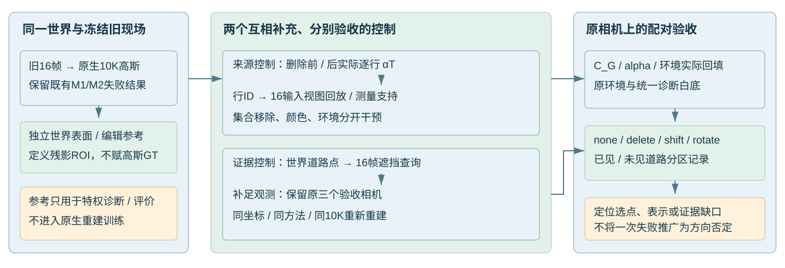
ROI固定为“独立原图first-hit车体 ∩ 独立删车first-hit道路”，不把所有删后alpha称为残影。逐行原生αT与完整渲染alpha闭合；排序后另做真实移除验证，排序本身不是单点因果效应。
颜色控制读取独立删车参考，只用于敏感性分析，不能作为部署方法或完成修复。删除/颜色干预均未训练；白底不是补景。
| 帧 | 保留行删前ROI αT | 同批行删后ROI αT | 原M1删车误差 | 移除32行 | 移除512行 | 仅校正128行颜色 |
|---|---|---|---|---|---|---|
| 000000 | 0.2165 | 2807.41 | 0.23259 | 0.21800 | 0.21519 | 0.16995 |
| 000008 | 0.2421 | 3406.51 | 0.21308 | 0.20267 | 0.21394 | 0.14412 |
| 000015 | 0.1391 | 2915.51 | 0.26362 | 0.26352 | 0.26804 | 0.20023 |
误差为ROI clamped RGB MAE。删得更多没有单调变好；仅替换环境也未消除残影。颜色控制改善说明这些保留行的外观确实参与错误，但不证明它们具有车辆身份，也不解决几何问题。
复查全部667,559行静态高斯，以中帧删除后654,881个保留行的实际ROI贡献为分母：原16视图累计可见贡献<0.1像素权重的行，占删后αT的78.08%，占共享像素误差加权αT的79.77%。误差加权值不是“这些行造成了79.77%的误差”的因果分解。
| 每行原16视图累计αT分箱 | 占中帧删后ROI αT | 占共享误差加权αT |
|---|---|---|
| <1e-4 | 10.95% | 8.87% |
| [1e-4,.01) | 38.98% | 39.57% |
| [.01,.1) | 28.15% | 31.33% |
| [.1,1) | 14.66% | 13.78% |
| >=1 | 7.27% | 6.45% |
中帧后删top128行，在全部16原视角中累计可见贡献仅约28.15像素权重；102行累计小于0.1、123行小于1。同128行在中帧删前ROI贡献0.00253，删后为865.11。top128仅占全部删后ROI αT的25.40%、误差加权量31.60%；top8仅占6.74%/9.38%，不能代表全部。这是冻结终模回放，不是每一步训练历史，不能据此说这些行从未接受过监督。
| 静态行ID | 16帧总贡献 | 落入原车像素 | 落入原道路像素 | 贡献>1e-4的帧数 |
|---|---|---|---|---|
| 461782 | 0.011764 | 0.006771 | 0.004993 | 2 |
| 535849 | 0.142111 | 0.016146 | 0.125965 | 13 |
| 537746 | 0.024051 | 0.008595 | 0.015457 | 10 |
| 553256 | 0.084786 | 0.019043 | 0.065743 | 7 |
| 536413 | 0.059679 | 0.025744 | 0.006990 | 7 |
| 469931 | 0.097884 | 0.016013 | 0.081871 | 6 |
| 533047 | 0.062777 | 0.010422 | 0.052355 | 8 |
| 553818 | 0.050199 | 0.010391 | 0.039808 | 10 |
例如461782行：原M1未选中；中帧删后ROI贡献61.36，视向RGB约[0,2.04,2.38]；中心深度11.56m，而原车first-hit约9.23m。它在16个视图的总贡献仅0.01176，且没有输入LiDAR点落入其3σ范围。其他top行存在部分测量支持，不能统一认定无约束。中心深度与投影足迹参考深度的差异也不是唯一物理身份判断。
16视图逐行记录 · top128汇总 · 测量与尺度支撑 · 实际损失/渲染源码审计
静态RGB项排除车辆mask内部；全场RGB、稀疏合成深度、静态寿命/速度及其他正则仍可能约束。原生SH视向颜色仅下界截断，环境直接学习纹理，均无上界1。这解释了HDR数值如何进入渲染，但未证明它们的完整训练成因。
按世界道路点跨帧投影，并做真实BVH first-hit遮挡查询。统计对象是三个旧锚点的10995个道路像素采样，跨锚点可能重复，不是世界面积比例。
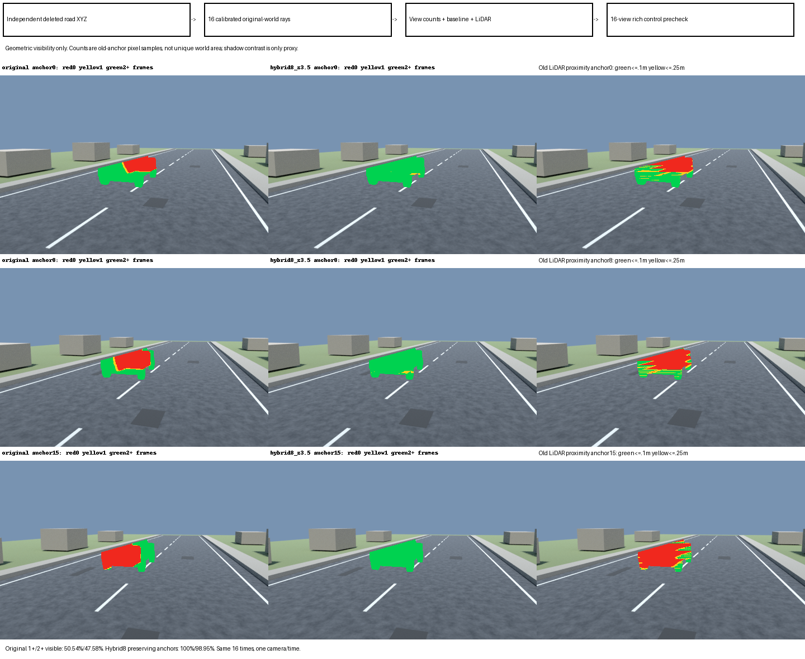
| 锚点 | 道路像素样本 | 旧输入从未可见 | 旧至少1帧 | 旧多视角夹角中位 | 新至少1帧 | 新多视角夹角中位 |
|---|---|---|---|---|---|---|
| 0 | 3764 | 1271 | 66.23% | 3.44° | 100.00% | 131.51° |
| 8 | 3567 | 1785 | 49.96% | 1.20° | 100.00% | 126.20° |
| 15 | 3664 | 2382 | 34.99% | 0.72° | 100.00% | 88.13° |
旧输入合计仅50.54%至少一帧可见，2+帧47.58%。hybrid8_z3.5保留0/8/15原相机，仅改变其余13个观测视角；几何可见性达100%，2+帧98.954%。这是补足目标道路几何可见性的机制控制，环绕采样并非真实车载连续轨迹。相机、稀疏LiDAR覆盖和初始化随之改变，不能称纯RGB效应。
连续射线可见还不等于有限像素采样或未受阴影污染的辐射已知。阴影开关差分仍只作为有限采样proxy，当前不宣称精确阴影标签。
仅冻结旧10K权重、换成新16个查询视图，原0/8/15相机与时刻保留。旧中帧残影top128的累计实际αT由28.15增至539.53，其中新道路像素贡献223.58；103/128行累计达到0.1，45行达到1。这既包含道路像素也包含车辆像素曝光，不是身份判定。
以旧中帧全部删后ROI贡献为固定分母，原累计可见量<0.1的行占78.08%；换新查询后仍低于0.1的占39.45%。41.53个百分点从弱变强，另有2.90个百分点从强变弱，净下降38.63个百分点。更多世界道路可见，确实使部分错误表示受到更多观测，但没有覆盖全部隐藏高斯。
例如535849行的累计贡献0.142→1.329，输入LiDAR点落入其3σ范围的帧数1→9；461782行则0.0118→0.3062，但仍无LiDAR点进入3σ。新视图对该行颜色的不一致只是贡献加权诊断，不等于训练梯度或可恢复性证明。
这是固定旧模型的查询探针，不是新10K训练结果。原活动Scene的transform文件与mtime均未改变；逐行贡献与原生alpha闭合最大相对误差1.05e-6。完整转移矩阵、128行与测量收据
完成真实约10分钟smoke，覆盖原生保存、评价、全部状态恢复与下一阶段；随后从零正式10K。新旧使用相同GN11方法、seed、30K学习率周期，固定旧世界→模型坐标和camera extent。输入仍为合法RGB、稀疏LiDAR、登记的轨迹与mask，独立编辑参考未进入训练。
新轨迹是13个环绕视角＋3个保留旧相机。它同时改变RGB、LiDAR覆盖与合法初始化，且终态容量不同；不能称纯RGB效应或等容量。相机逆矩阵采用float64规范化，三个锚点RGB有极少量重放微差，完整披露在收据。
这里两臂均为各自原生动态分支执行编辑，不额外调用M1选点。下方M1来源复查另列，不能把旧M1与新原生结果混作方法比较。
补足输入道路的几何可见性，没有自动得到可编辑的原生分解。 中帧删除动态分支后，仍能直接看见红色车形残留。原生删除的三个锚点显露道路clamped MAE由0.17231增至0.19854；中帧由0.17816增至0.22145。该结果回答的是当前原生训练在这一观测控制下的表现，不是准确归属或联合修复的上界。
变化也不是所有编辑都一致退化：前两锚点的横移／转向显露区误差有所下降，末帧仍有退化。未编辑全图误差总体较小，但原图拟合好并未保证删车后正确。旧输入至少见过一次的道路组，删除clamped MAE从0.14422升至0.19111；旧未见组从0.20102升至0.20612。旧未见组raw误差略降（0.20959→0.20612），与clamped结论不同，不能选择其中一项宣称补足视角已经成功。
固定旧模型桥接说明新视角暴露了部分错误行；重新训练后行集合与密度变化，不能直接追认旧行被修好或复用旧ID。这里仍混有有限优化预算、分支竞争、非唯一几何／外观解释等因素，尚未证明某一个成因。下节已完成新模型同规则删后来源复查；下一步检验可验证的统一编辑路由。不能把这些残影直接标签成car，也不能再以重复删前99.9%覆盖作为完成依据。
| 帧 | 编辑 | 分区 | 像素数 | 旧raw MAE | 旧clamped MAE | 新raw MAE | 新clamped MAE |
|---|---|---|---|---|---|---|---|
| 000000 | none | full | 153600 | 0.00416 | 0.00414 | 0.00621 | 0.00618 |
| 000000 | delete | newly_exposed_road | 3764 | 0.18196 | 0.17920 | 0.17809 | 0.17808 |
| 000000 | shift | newly_exposed_road | 2164 | 0.25034 | 0.23975 | 0.19004 | 0.19001 |
| 000000 | rotate | newly_exposed_road | 963 | 0.40286 | 0.34873 | 0.22478 | 0.22231 |
| 000008 | none | full | 153600 | 0.00355 | 0.00353 | 0.00375 | 0.00373 |
| 000008 | delete | newly_exposed_road | 3567 | 0.18203 | 0.17816 | 0.22145 | 0.22145 |
| 000008 | shift | newly_exposed_road | 2120 | 0.22541 | 0.21921 | 0.20690 | 0.20690 |
| 000008 | rotate | newly_exposed_road | 753 | 0.23071 | 0.23071 | 0.16856 | 0.16856 |
| 000015 | none | full | 153600 | 0.00408 | 0.00406 | 0.00390 | 0.00388 |
| 000015 | delete | newly_exposed_road | 3664 | 0.16566 | 0.15955 | 0.19725 | 0.19725 |
| 000015 | shift | newly_exposed_road | 2143 | 0.13617 | 0.13180 | 0.14900 | 0.14900 |
| 000015 | rotate | newly_exposed_road | 766 | 0.18151 | 0.17874 | 0.25497 | 0.25497 |
| 编辑 | 分区 | 像素数 | 旧clamped MAE | 新clamped MAE |
|---|---|---|---|---|
| delete | old_observed_road | 5557 | 0.14422 | 0.19111 |
| delete | old_unseen_road | 5438 | 0.20102 | 0.20612 |
| delete | old_2plus_frames_road | 5231 | 0.14299 | 0.18916 |
| shift | old_observed_road | 3479 | 0.16970 | 0.19003 |
| shift | old_unseen_road | 2948 | 0.22918 | 0.17233 |
| shift | old_2plus_frames_road | 3338 | 0.16973 | 0.18992 |
| rotate | old_observed_road | 1825 | 0.28493 | 0.20252 |
| rotate | old_unseen_road | 657 | 0.19249 | 0.25376 |
| rotate | old_2plus_frames_road | 1796 | 0.28533 | 0.20001 |
世界点先按原16视图first-hit可见性分组，再与当前编辑的独立road表面相交。跨锚点可能重复世界位置，非面积平均；未知未见部分不是单靠身份必须恢复的道路真值。
| 观测臂 | 静态行 | 动态行 | 环境参数 |
|---|---|---|---|
| M0 | 667559 | 1133268 | 18874368 |
| richer_observations | 1157894 | 302428 | 18874368 |
正式10K不包含smoke 5400次更新与入口2次更新；smoke训练循环600.032秒。初始化、保存、评价与正式执行墙钟分开登记。完成3锚点×4编辑及1留出相机×4编辑，不能据此宣称全时序稳定性通过。
V43 · Fresh 10K 共同锚点来源复查 · 仅冻结诊断，0额外训练更新
原 native delete 在中、末锚点的独立道路误差变差。按同一真实 αT 阈值选择静态行的 M1 对照，其删除操作在三个锚点的 revealed-road ROI 误差均低于旧 M1，但新中帧图像仍有明显红色车形残影和路面块状、条纹伪影。新 M1 的 shift / rotate 未在本小节验证，不据此推广为其他编辑操作改善。原生分支路由与 M1 是两种协议，分别比较。
两次重建各从零正式 10,000 更新，保留原 30,000 步学习率周期；13/16 个输入相机改变，共同锚点不变。静态行数由 667,559 变为 1,157,894，属于同算法下自然产生的容量差异，不能把结果解释为固定容量的单因素实验。M1 是允许独立像素真值的诊断对照，既不是真实 owner GT，也不是部署方法或数学上界。
ROI = 原共同视图 first-hit 车体 ∩ 独立删车 first-hit 道路；四列协议逐帧像素数相同。越低越好。所有分数由原始 FP32 final 评价，未用 PNG 反算。
| 协议 | 000000 | 000008 | 000015 |
|---|---|---|---|
| 旧 native delete | 0.18196 / 0.17920 | 0.18203 / 0.17816 | 0.16566 / 0.15955 |
| 新 native delete | 0.17809 / 0.17808 | 0.22145 / 0.22145 | 0.19725 / 0.19725 |
| 旧同规则 M1 delete | 0.24118 / 0.23259 | 0.22102 / 0.21308 | 0.29280 / 0.26362 |
| 新同规则 M1 delete | 0.13729 / 0.13639 | 0.12239 / 0.12203 | 0.19857 / 0.19604 |
M1 每个 checkpoint 自行按原车体像素内真实统一深度排序的 ΣαT > 10⁻⁴ 选择静态行，删除这些行及全部原动态行。无近深度门限，不移用旧 row IDs。选前覆盖率的分母是原 body 内所有静态贡献；最后一列则是 revealed-road ROI 内保留静态行的删前 → 删后贡献，两个区域不可混作同一个统计。
| 帧 | 选中静态行 | 原 body 静态贡献覆盖 | 原 body 静态 ΣαT | 保留行 ROI ΣαT：pre → post |
|---|---|---|---|---|
| 000000 | 14,866 | 99.8838% | 297.400 | 0.30395 → 3717.646 |
| 000008 | 20,009 | 99.9607% | 1028.401 | 0.36191 → 3417.853 |
| 000015 | 16,245 | 99.9721% | 974.831 | 0.25401 → 2777.861 |
每个模型均对自己的16个合法观测视图、正确动态时刻作冻结回放，累计所有静态行的原 vehicle / road / other 像素贡献。以下以各自中帧 M1 删后 revealed-road ROI 的实际 αT 为分母；“累计可见量低于 .1”不是身份标签，也不是训练全过程无梯度的证明。
<1e-4[1e-4,.01)[.01,.1)[.1,1)≥1
相同分箱以共享像素误差加权 αT 作权重，低于 .1 的占比为旧 79.77%、新 68.56%。该统计用于来源排序和分布，不是每颗高斯的单独因果误差。新模型仍有大量原观测低贡献行在删除后显露。
点击图片查看原始 PNG；参考图保持独立无车 RGB。
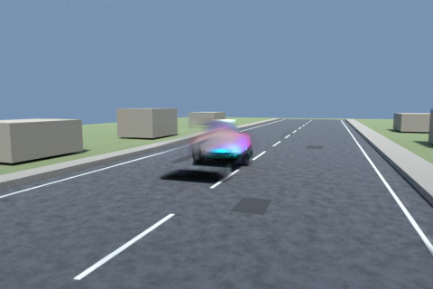
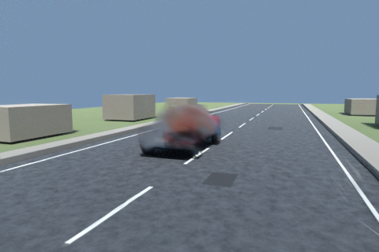
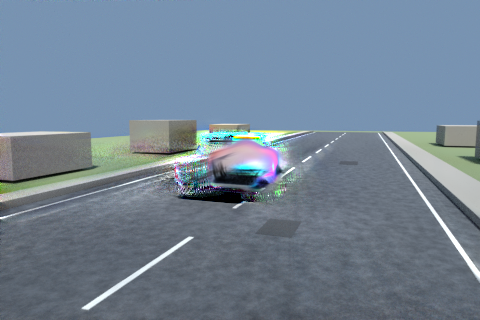
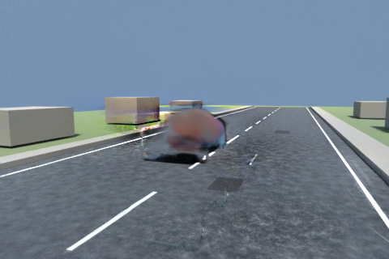
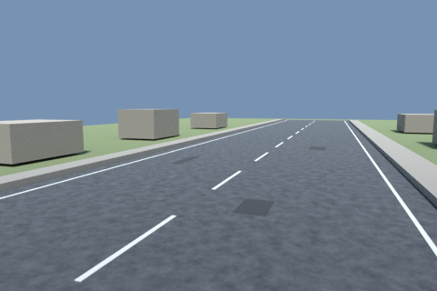
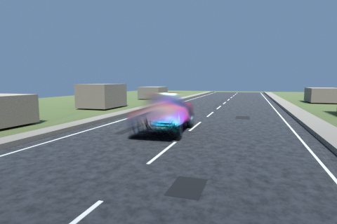
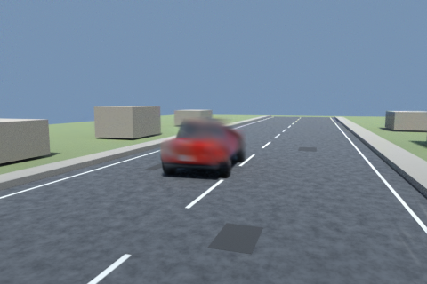
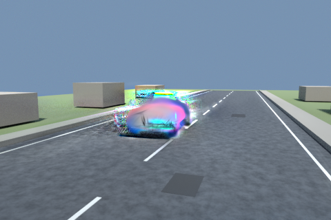
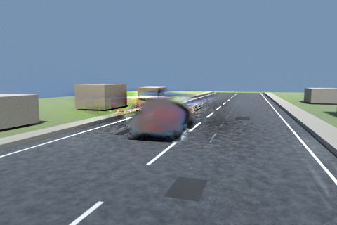
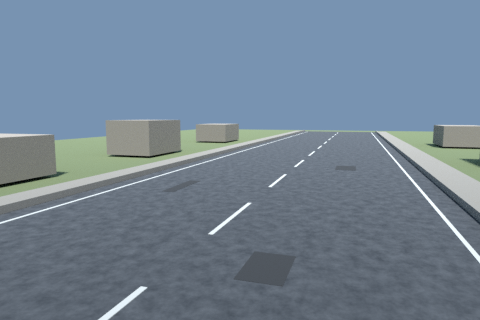
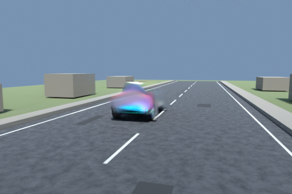
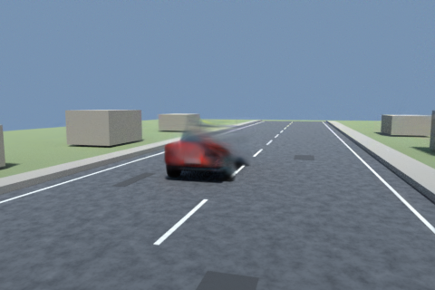
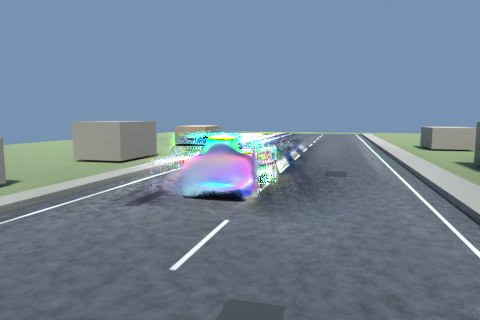
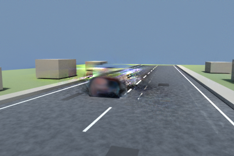
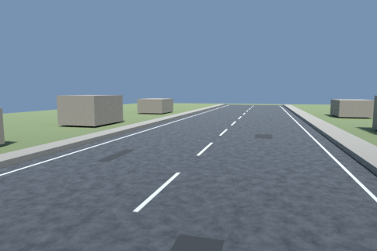
共同口径总表 JSON · 新 native 独立评分 · 旧 native 独立评分 · 新中帧来源、row IDs 与守恒收据 · 新中帧 top2000 CSV · 新全行分箱 · 原始文件 SHA256 清单 · native / 私有 query 三锚点 FP32 恒等 · 共同口径 CSV
共同外参 / K、native none 恒等、特征梯度 ΣαT 守恒及 frozen 参数检查均保存；活动训练 Scene 的 transform 内容与 mtime 未变。图像残影判断为代理视觉复核，human_verdict=null，未宣布质量验收、真实场景泛化或新 V43 方法成功。旧模型换新观测的桥接 probe 与这里的 fresh10K 结果分开保存。
全行NPZ在本地source_control_r1/evidence/source/与远端保留；网页版/Git附聚合JSON和SHA清单，不嵌入模型数组。
以上为一个机制场景的来源和证据诊断；不代表真实场景泛化，不训练新的分类器，也不将特权颜色诊断包装为算法。AutoDL保持开机。
下一步最小可辨识协议及停止条件：固定表示的统一路由只称真值辅助可行性参考；有限穷举只能证明其受限子问题，不能证明全局不可能。